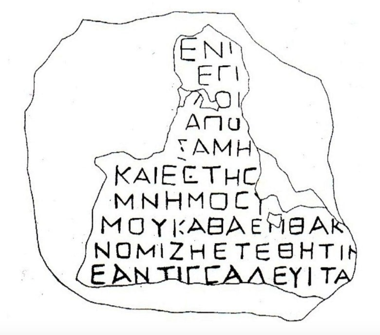

ბერძნულწარწერიანი კირქვის ფილა კავთისხევიდანGreek limestone inscription from Kavtiskhevi
ბერძნულწარწერიანი კირქვის ფილა კავთისხევიდან
Greek limestone inscription from Kavtiskhevi
შინაარსი / Summary
საამშენებლო-მოსახსენებელი Building-memorial
ბიბლიოგრაფია Bibliography
კრიტიკული გამოცემა Interpretive Edition
ΕΝΙ
ΕΓΙ
ΑΠΙ
ΑΠΩ
5=ΙΑΜΗ
καὶ ἔστησ ε
μνημόσυ νον
μοῦ Κἀθας ἐπὶ θάκ ῳ
νομίζ εται η
10ἐὰν τὶς σαλεύ ει ιτα ι
დიპლომატიური გამოცემა Diplomatic Edition
ΕΝΙ
ΕΓΙ
ΑΠΙ
ΑΠΩ
5=ΙΑΜΗ
ΚΑΙ ΕΣΤΗΣ Ε
ΜΝΗΜΟΣΥ ΝΟΝ
ΜΟΥ ΚΑΘΑΣ ΕΠΙ ΘΑΚ Ω
ΝΟΜΙΖ ΕΤΑΙ Η
10ΕΑΝ ΤΙΣ ΣΑΛΕΥ ΕΙ ΙΤΑ Ι

Gravestone from Kavtiskhevi, 2006
{'ka': 'დადგა ჩემს სამახსოვროდ (ან მოსაგონრად) კათასმა, (მომათავსა) მერხზე ჩვეულებისამებრ და ეს ყოველივე გააკეთა მუშაკმა, რომელსაც საფასურს ვუხდით (ან - უხდის), ხოლო თუ ვინმე\n ყოყმანობს (მნახველთაგანი), (მას ამან არ უნდა აღუძრას უკმაყოფილება - ან მას უნდა აღუძრას პატივის მიგების სურვილი). თარიღი ძირითადად II-III სს-ია, თუმცა მაგალითები იტალიიდან და კვიპროსიდან\n IV-V სს-ით არის დათარიღებული. მასალის გათვალისწინებით, კავთისხევის წარწერა II-III სს-აა.', 'en': 'This was placed as a memorial for me by Kathas, (He put this) on a desk according to the habit, all these was done by a laborer, Kathas gave him his salary, and if somebody is hesitating (among the witnesses), (this should not be reason for discontent - or it should not be reason of being cherished). The major dates are II-III, but some examples from Italy and Cyprus are IV-V centuries. According to the material Kavtiskhevi inscription is II-III centuries.'}
{'ka': 'ენის თვალსაზრისით აღსანიშნავია ახალი საუკუნეების მიჯნაზე ბერძნულში გაჩენილი იტაციზმი. ამისი 2 შემთხვევაცაა წარწერაში: νομιζη (IX სტრ.) = νομίζει\n (ამ დროისთვის η-ს და ει- დიფთონგიც გამოითქმის i-დ), და X სტრიქონში - σαλευιτα (=σαλεύειτα[ι]. აქაც იგივე მდგომარეობაა:\n σαλεύειται-ში ει-დიფთონგი არის i-). ძველი ბერძნულის სხვა ნორმები დაცულია. θ, ο მოხაზულობის ასოები, რაც სისტემატიურად იხმარება კავთისხევის წარწერაში, იშვიათად,\n მაგრამ მაინც, გვხვდება შავი ზღვის სამხრეთით მდებარე ქვეყნების ტერიტორია.\n თუკი თარგმან-კომენტარი სწორია, კათასმა პატივსაცემ პირს დაუდგა ძეგლი, ზედ მოათავსა მასზე მჯდომი გამოსახულება და გამვლელთ სთხოვს, ამ პირის ხსოვნას პატივი სცენ. ჩანს, ეს\n ბერძნულწარწერიანი ფილა საფლავის ქვა ყოფილა, ხოლო ეს ფილა მერხზე, თუ სავარძელზე, სადაც მიცვალებულის გამოსახულება იჯდა, ზედ იქნებოდა მიმაგრებული ან გამოყვანილი. სახელი Κάθας ქართულ ონომასტიკონში არ გვაქვს. არის ლ. ზგუსტას შრომაში Κάθαις Παρνούγου (#659) ოლვიიდან, რაც სპეციალისტებს ირანულ-ოსურიდან შემოსულად მიაჩნიათ.\n რადგან თ, ტ - ფონეტიკურად მონაცვლე თანხმოვნებია, აქვე შეიძლება მოვიყვანოთ სახელები ბოსფორის წარწერებიდან, Κάτταις, Κατίων (II ს.), Κάτοκας (II-III სს.), ხოლო მათ\n ეტიმოლოგიაზე მსჯელობისას სპეციალისტები იმ აზრისა არიან, რომ ისინი არიან ძველი ირანული წარმოშობისა შერწყმული ოსურთან (შდრ. L. Zgusta Die Personennamen griechischen\n Städte der nördlichen Schwarzmeerküste, Praha, 1955). ყოველ შემთხვევაში ბერძნულ-ლათინურად ისინი არცერთ სპეციალისტს არ მიაჩნია. კავთისხევის ამ წარწერის მიხედვით მისი\n შემსრულებლის ვინაობას ვერ დავადგენთ. თუმცა ტექსტი ბევრად უფრო შემდეგი ხანისაა ჩვენს წარწერასთან შედარებით, მაინც უნდა აღინიშნოს, რომ აგათიას (VI ს.) აქვს ცნობა - Καθάρος\n მდინარე კოლხეთში (ძირი აქაც იგივეა). მოგვყავს გეოგრაფიული პუნქტის სახელი "კატაულა" (ბერი-კატა), რომელიც მდებარეობს კავთისხევის მიდამოებში და სადაც მოპოვებულია კვლევის\n ობიექტი. რა დროისაა ეს გეოგრაფიული სახელი ცნობილი არ არის, მაგრამ პუნქტი ცნობილია მეცნიერებაში იმ VIII ს-ის ქართული ასომთავრული წარწერებით, რომლებიც მის ნაგებობაზეა\n დაცული (ნ. შოშიაშვილი, ქართული წარწერების კორპუსი, I. ლაპიდარული წარწერები I, 1980, 39, 118-123). სავარაუდოა, რომ გეოგრაფიული სახელი "კატაულა" ბევრად\n ადრინდელია VIII ს-ზე.', 'en': 'In terms of the linguistic description we need to notice the itacism that appears on the border of the new century. Two examples of this in the inscription: νομιζη (9th line) = νομίζει ( η and ει are pronounced as i by that time), 10th line - σαλευιτα (=σαλεύειτα[ι]. The same case:the word σαλεύειται where the diphthong ει is given as i). Other norms of Ancient Greek are maintained. The shape of the letters θ, ο from Kavtiskhevi inscription are rarely but still present in other inscriptions from the southern districts of the Black Sea.\n If the translation and comment is correct, Katas had erected the statue to some honorable person, placed the sitting statue of his and asks every passerby to commemorate this man. It seems that the Greek plaque was a gravestone and the plaque on the desk or throne, where the sitting statue was placed, would be fixed or engraved on it. The name Κάθας is not known in Georgian onomasticon. Κάθαις Παρνούγου (#659) which is mentioned in the research by L. Zgusta from Olivia, is considered to be a borrowing from Irano-Ossetian. As the letters Th and T are interchangeable we can also bring the names from Bosporus: Κάτταις, Κατίων (II c.), Κάτοκας (II-III), their etymology is regarded to derived from the mixture of old Iranian and Ossetian (com L. Zgusta Die Personennamen griechischen Städte der nördlichen Schwarzmeerküste, Praha, 1955). None of the specialists consider them connected to the Greek or Latin origin. We can not identify the author of Kavtiskhevi inscription. Although the text by Agathia is from later period but it is worth to mention that he provides the name of the river Καθάρος in Kolkheti (where the root of the word is the same). We aso bring the toponym “Kataula”(a priest Kata), which is located in the surroundings of Kavtiskhevi where the object was found. It is unknown when this place was popular, but toponym is mentioned in VIII century capital letter inscription preserved on one of the buildings from there (N. Shoshiashvili, Corpus of Georgian inscription, I, Lapidary Inscriptions (I, 1980, 39, 118-123). It is possible that the name “Kataula” is much earlier than the VIII century.'}
<div type="edition" xml:lang="ka" ana="mtavruli" xml:space="preserve">
<ab>
<lb n="1"/><w lemma="ქრისტე"><expan><abbr>ქ</abbr><ex>რისტ</ex><abbr>ე</abbr></expan></w>
<w lemma="განსუენება"><expan><abbr>გა</abbr><ex>ნ</ex><abbr>ო</abbr><ex>ჳ</ex><abbr>ს</abbr><ex>უ</ex><abbr>ენე</abbr></expan></w>
<w lemma="სულ">სოჳ<lb n="2" break="no"/>ლსა</w>
<name nymRef="ვაჩა">ვაჩაჲს<lb n="3" break="no"/>ასა</name>
<name nymRef="გურა"><expan><abbr>გო</abbr><ex>ჳ</ex><abbr>რაჲ<lb n="4" break="no"/>სასა</abbr></expan></name>
<name nymRef="მირა"><expan><abbr>მ</abbr><ex>ი</ex><abbr>რა</abbr><ex>ჲ</ex><abbr>ს</abbr><ex>ა</ex><abbr>ს</abbr><ex>ა</ex></expan></name>
</ab>
</div>